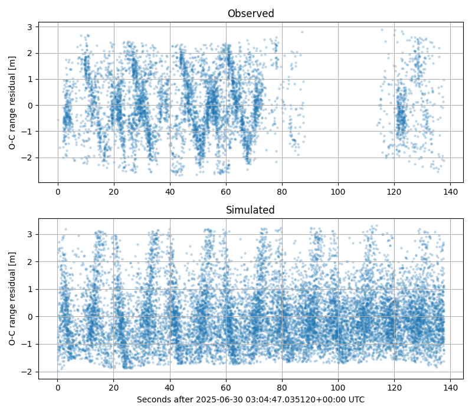
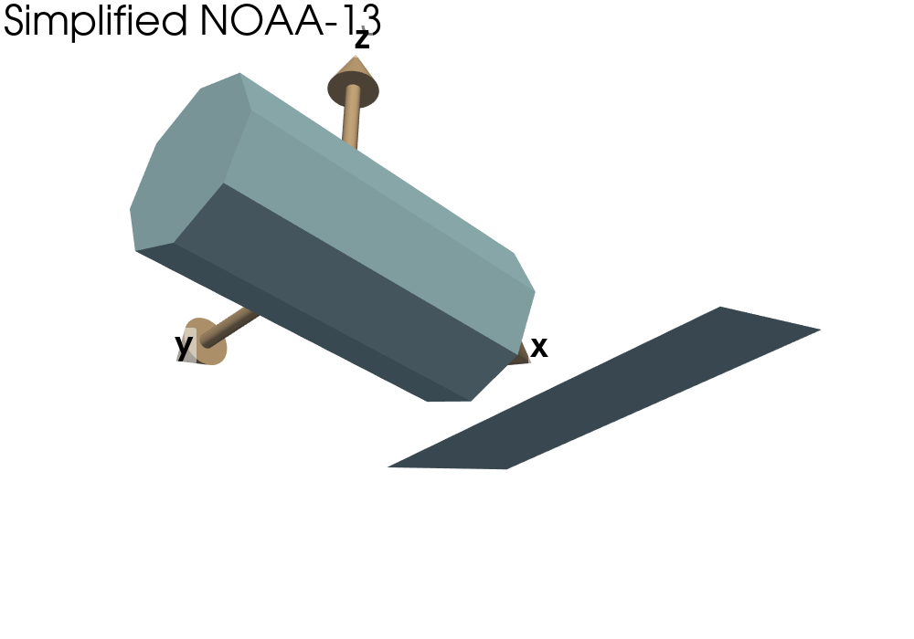

Note
Go to the end to download the full example code.
Displaying NOAA 13 SDLR#


200.0000000001819
/home/liam/Documents/mirage/mirage/vis/visualization.py:902: PyVistaDeprecationWarning:
/home/liam/Documents/mirage/mirage/vis/visualization.py:902: Arguments 'start', 'direction' must be passed as keyword arguments to function 'Arrow'.
From version 0.50, passing these as positional arguments will result in a TypeError.
pv.Arrow(origin, direction, **arrow_kwargs),
/home/liam/Documents/mirage/mirage/vis/visualization.py:902: PyVistaDeprecationWarning:
/home/liam/Documents/mirage/mirage/vis/visualization.py:902: Arguments 'start', 'direction' must be passed as keyword arguments to function 'Arrow'.
From version 0.50, passing these as positional arguments will result in a TypeError.
pv.Arrow(origin, direction, **arrow_kwargs),
/home/liam/Documents/mirage/mirage/vis/visualization.py:902: PyVistaDeprecationWarning:
/home/liam/Documents/mirage/mirage/vis/visualization.py:902: Arguments 'start', 'direction' must be passed as keyword arguments to function 'Arrow'.
From version 0.50, passing these as positional arguments will result in a TypeError.
pv.Arrow(origin, direction, **arrow_kwargs),
integrate orbit and station: 6.99e+00 seconds
taus: 7.35e-03 seconds
mm model: 5.42e-01 seconds
atmos trajs: 6.97e-03 seconds
att prop: 4.31e-03 seconds
on 0: build node: 2.85e-01 seconds
on 0: build node: 1.12e-01 seconds
on 0: build node: 7.07e-02 seconds
Building nodes: 0.02 |████████████████████████████████████████| 978 in 19.9s (49.16/s)
interping out: 3.25e-02 seconds
on 1550: message: Optimization terminated successfully.
success: True
fun: 7.1596429417357905
funl: [ 7.160e+00 7.165e+00 8.343e+00 8.947e+00 2.586e+02
7.341e+02]
x: [ 4.409e+03 -4.114e+03 3.976e+03 2.022e+00 -3.750e+00
-6.087e+00]
xl: [[ 4.409e+03 -4.114e+03 ... -3.750e+00 -6.087e+00]
[ 4.408e+03 -4.114e+03 ... -3.745e+00 -6.089e+00]
...
[ 4.407e+03 -4.113e+03 ... -3.739e+00 -6.089e+00]
[ 4.409e+03 -4.115e+03 ... -3.754e+00 -6.099e+00]]
nit: 10
nfev: 1550
nlfev: 892
nljev: 82
nlhev: 0
SHGO: 2556.45 |████████████████████████████████████████| 1550 in 1:19.9 (19.40/s)
import os
import matplotlib.pyplot as plt
import numpy as np
import polars as pl
import pyvista as pv
import mirage as mr
import mirage.vis as mrv
np.random.seed(1)
station = mr.Station('izana')
station.telescope.ccd = mr.Station('pogs').telescope.ccd
station.telescope.transmit_optical_efficiency = 0.7
station.telescope.receive_optical_efficiency = 0.7
norad = 22739
df = (
pl.scan_parquet(
os.path.join(
os.environ['SRCDIR'], '../scratch/digos/data/proc/digos-dlr.parquet'
)
)
.filter(pl.col.norad == norad)
.collect()
).with_columns(epsecs=(pl.col.date - pl.col.date.min()).dt.total_nanoseconds() / 1e9)
print(1 / df['epsecs'].diff().min())
obj, _ = mr.parametric_scyl_wing(
body_length=3.71,
body_radius=1.88 / 2,
panel_length=4.91,
panel_width=2.37,
panel_angle_rad=np.deg2rad(20),
)
p = pv.Plotter(window_size=(1000, 700))
mrv.render_spaceobject(p, obj)
obj2, _ = mr.parametric_scyl_wing(
body_length=3.71,
body_radius=1.88 / 2,
panel_length=4.91,
panel_width=2.37,
panel_angle_rad=np.deg2rad(20),
)
# obj2.shift_to_center_of_mass()
# mrv.render_spaceobject(p, obj2, style='wireframe')
p.add_text('Simplified NOAA-13')
p.camera.position = 12 * mr.hat(np.array([-0.8, -1.0, -1.0]))
mrv.plot_basis(
p,
np.eye(3),
labels=['x', 'y', 'z'],
scale=np.max(mr.vecnorm(obj2.v)) / 2,
shape_opacity=0.5,
)
p.show()
obj.sat = mr.SpaceObject('cube.obj', identifier=22739).sat
laser = mr.Laser(
hz=200,
lam=1064,
pulse_energy=200e-3,
beam_divergence_half_angle=mr.dms_to_rad(0, 0, 15),
tracking_jitter_rad=mr.dms_to_rad(0, 0, 1),
beam_pointing_error_rad=mr.dms_to_rad(0, 0, 0),
pulse_fwhm_ns=5,
)
# quat0=np.array([-0.1270018 , 0.21898798, -0.96685908, -0.03314092])
# omega0=np.array(mr.sph_to_cart(3.20302861, 1.2625999 , 0.32069396))
quat0 = np.array([-0.61523508, -0.19737636, 0.70313614, -0.2968635])
omega0mag = 0.32069466686498926
omega0 = np.array([0.0, omega0mag, 0.0])
m_range_gate = 2.27 + 2.65
ns_range_gate = 2 * (m_range_gate / mr.AstroConstants.speed_of_light_vacuum) * 1e9
df_est = mr.sdlr_residuals_adaptive(
station,
obj,
attitude=mr.RbtfAttitude(q0=quat0, w0=omega0, itensor=np.diag([1, 1, 1])),
brdf=mr.Brdf('blinn-phong', cd=1.0, cs=0.0, n=10, validate=False),
laser=laser,
start_date=df['date'].min(),
end_date=df['date'].max(),
noise_counts_per_sec=int(1e2),
range_gate_ns=ns_range_gate,
)
plt.figure(figsize=(8, 7))
plt.subplot(2, 1, 1)
plt.title('Observed')
plt.scatter(df['epsecs'], df['est_depth_poly'], s=5, alpha=0.2)
plt.ylabel('O-C range residual [m]')
plt.grid()
plt.subplot(2, 1, 2)
plt.scatter(df_est['epsecs'], df_est['est_depth_poly'], s=5, alpha=0.2)
# plt.gca().set_facecolor('k')
plt.grid()
plt.title('Simulated')
plt.xlabel(f'Seconds after {df["date"][0]} UTC')
plt.ylabel('O-C range residual [m]')
plt.tight_layout()
plt.show()
Total running time of the script: (1 minutes 52.648 seconds)